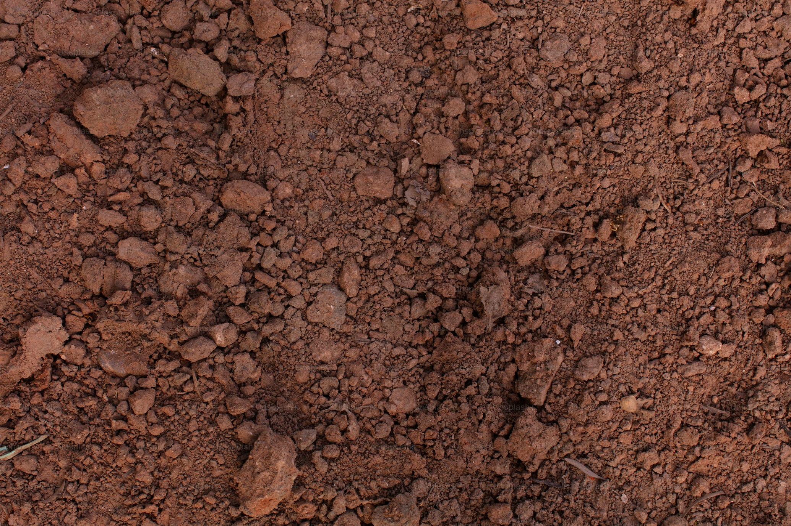
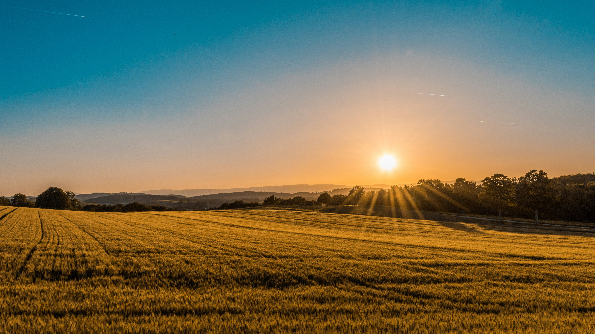

Alternativas aos Pesticidas
A natureza tem os seus próprios mecanismos de defesa. Propomos o uso de extratos botânicos, consociações de plantas e o fomento de predadores naturais para manter as culturas saudáveis e livres de venenos.
DO CONSUMO À REGENERAÇÃO
Não basta conservar; é preciso regenerar. A Biocultura nasce como uma resposta técnica e ética aos desafios ambientais modernos. Focamos em soluções que eliminam a dependência de químicos, reduzem o desperdício e devolvem a autonomia aos ecossistemas e às pessoas.

A natureza tem os seus próprios mecanismos de defesa. Propomos o uso de extratos botânicos, consociações de plantas e o fomento de predadores naturais para manter as culturas saudáveis e livres de venenos.
O saneamento não deve ser um desperdício. Através das Biofossas Térreas, transformamos águas residuais em fertilidade para o solo, utilizando processos biológicos de fitodepuração.
Evitar o desperdício é o primeiro passo. Implementamos sistemas de recolha de águas pluviais e reutilização de águas cinzentas, garantindo que cada gota cumpre o seu propósito regenerativo.
O resto da comida não é lixo, é o início do solo. Com minhocários e compostagem técnica, criamos húmus de alta qualidade, fechando o ciclo da matéria orgânica em casa.
Entenda como sistemas simples de design podem salvar milhares de litros e proteger a sua propriedade da seca.

O solo contaminado por pesticidas está morto. Saiba como usar o minhocário para devolver a vida e a estrutura à sua terra.

As vantagens da micro-geração solar e o impacto oculto das grandes centrais no desmatamento local.